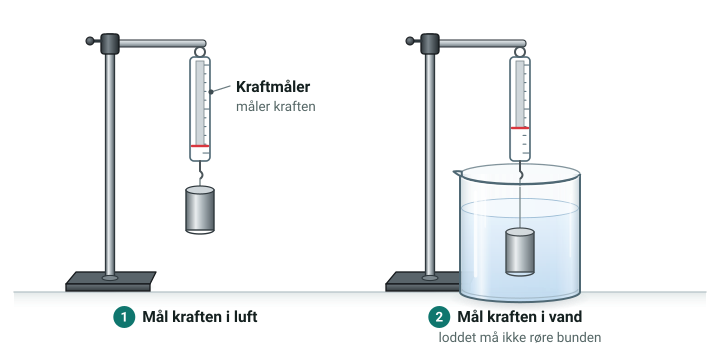

Modul 3 · Fysik
Archimedes’ lov: opdrift i vand og luft
En ballon stiger, fordi luften omkring den skubber den opad. Den kraft kaldes opdriften. I dag finder I ud af, hvor stor opdriften er. Den er nemmest at måle i vand, hvor den er stor. Bagefter ser I på opdriften i luft, som er den, en ballon bruger.
1Opdrift i vand

Hæng et lod i kraftmåleren, og aflæs kraften. Sænk så loddet helt ned i et bægerglas med vand, uden at det rører bunden, og aflæs igen. Mål til sidst loddets volumen: Sænk det ned i et måleglas med vand, og se, hvor meget vandet stiger. Gør det samme med et lod af et andet metal.
| Lod | I luft i N | I vand i N | Opdrift i N | Volumen i mL |
|---|---|---|---|---|
| 1 | ||||
| 2 |
Opdriften er forskellen på kraften i luft og kraften i vand. Beregn den for begge lodder, og skriv den i skemaet.
Beregn tyngden af det vand, lod 1 skubber væk. 1 mL vand vejer 1,00 g.
Hjælp
Vandets masse i gram er lige så stor som loddets volumen i mL. Regn massen om til kg, og gang med g.
Sammenlign opdriften med tyngden af det vand, loddet skubber væk. Passer det med Archimedes’ lov?
Afhænger opdriften af, hvor tungt loddet er, eller af, hvor stort det er? Sammenlign de to lodder.
2Opdrift i saltvand
Mål kraften på lod 1, mens det hænger i mættet saltvand. Saltvandets densitet er ca. 1,2 g/mL.
Er opdriften større eller mindre end i vand? Forklar med formlen for opdriften.
3Opdrift i luft
Luft har også en densitet. Ved 20 °C vejer 1 L luft 1,20 g, og 1 L carbondioxid vejer 1,83 g.
En elev vejer 60 kg og fylder ca. 60 L. Hvor mange gram luft skubber eleven væk, og hvor stor er opdriften fra luften i newton?
Læreren lader natron og eddike danne carbondioxid i bunden af en balje og puster sæbebobler ned i baljen. Hvad sker der med boblerne? Forklar med densiteterne.
4Kræfterne på en ballon
En ballon fyldt med en let gas påvirkes af tre kræfter: opdriften fra luften udenfor, tyngden af gassen i ballonen og tyngden af selve ballonen med last.
Tegn ballonen, når den svæver stille, og tegn de tre kræfter som pile. Skriv navnet ved hver pil. Pilene opad og nedad skal tilsammen være lige lange.
Hvad skal der gælde for kræfterne, for at ballonen stiger?